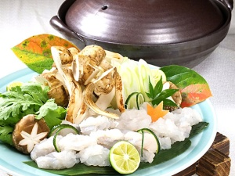

素材を活かす
利京のお出汁
和食の基本であり、出汁の味で和食はお店が決まると言っても過言ではない。 そんな畑中の出汁は濃い目にとっており、素材がもつ本来の旨味を味わっていただくため調味はほとんどしないので、お出汁と素材のお味をしっかりとご堪能いただけます。 畑中では一番出汁しか使用せず、昆布と鰹の濃縮された旨味が詰まった出汁でお料理を演出いたします。
昆布
昆布はえぐみが出ないように弱火で火を入れ、風味を損なわないよう昆布の旨味のみを抽出させます。
鰹
鰹節は、和食料理店の基準量の1.5倍ほど
多く入れお出汁の風味を濃厚にさせます。
食材の風味を損なうことなく、お出汁と素材の融合で引き出される旨味は絶品です。
野菜
野菜は、地元農家さんが作った京野菜を使用しています。

- 